Automação Industrial
Desenvolvimento e implementação de soluções de controle, supervisão e integração de processos.
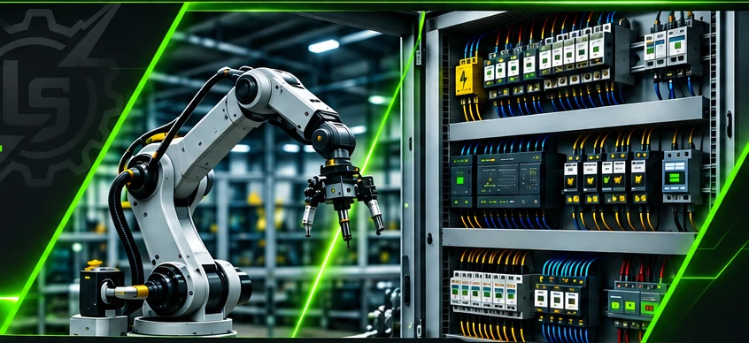
Desenvolvimento e implementação de soluções de controle, supervisão e integração de processos.
Mais eficiência operacional por meio de instrumentação, análise técnica e melhoria contínua.
Soluções planejadas conforme a necessidade da aplicação e as características de cada operação.
Na LG Tech Automação, acreditamos que a tecnologia é uma grande aliada para tornar a indústria mais segura, produtiva e eficiente. Também acreditamos que a automação industrial deve estar ao alcance de todos, e não apenas das grandes empresas.
Nosso trabalho é aproximar a tecnologia da realidade de cada negócio, oferecendo soluções que atendam às suas necessidades, respeitando suas possibilidades e contribuindo para seu crescimento.
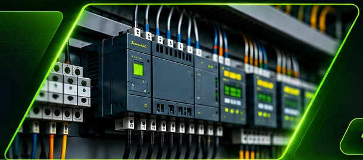
A LG Tech Automação nasceu do desejo de oferecer soluções reais para os desafios encontrados no dia a dia da indústria. Acreditamos que cada empresa possui suas próprias necessidades e que cada projeto merece atenção. Por isso, buscamos entender a realidade de cada cliente, desenvolver soluções adequadas e acompanhar de perto todas as etapas, desde a ideia inicial até a implementação.
Mais do que entregar projetos, queremos construir parcerias, compartilhar experiências e contribuir para o desenvolvimento de pessoas e empresas.
Entregar soluções em automação industrial que simplifiquem processos, aumentem a eficiência e tragam mais segurança às operações dos nossos clientes.
Além disso, compartilhar conhecimento, incentivar o aprendizado e contribuir para a formação de pessoas que desejam crescer na área da tecnologia e automação.
Ser reconhecida como referência em automação industrial pela qualidade das soluções, pela confiança construída e, acima de tudo, pela parceria com nossos clientes.
Buscamos crescer continuamente, inovar e evoluir junto com cada empresa que confia em nosso trabalho.
Soluções completas em automação industrial, com projeto, implementação e suporte técnico, para aumentar a eficiência, a segurança e a produtividade da sua operação.
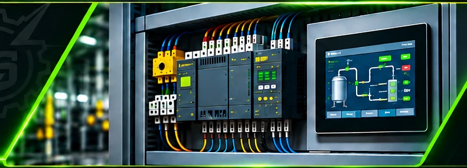
Desenvolvimento e implementação de soluções para controlar, monitorar e integrar etapas de processos industriais.
Aplicações: bombas, motores, tanques, esteiras, máquinas e linhas de produção.
Planejamento de arquitetura de comando e controle, organização de componentes e apoio técnico para especificação de painéis conforme a aplicação.
Aplicações: painéis de comando, automação, distribuição e acionamento.
Montagem de painéis (em breve)Criação e adequação de programas para controladores e interfaces homem-máquina, buscando operação clara, segura e confiável.
Aplicações: máquinas, sistemas de bombeamento, processos contínuos e linhas automatizadas.
Apoio técnico na integração de equipamentos novos ou substituídos ao processo existente, desde a análise inicial até os testes de funcionamento.
Aplicações: instrumentos, inversores, motores, sensores, medidores e sistemas de controle.
Atendimento para análise de falhas, dúvidas de operação e melhorias em sistemas de automação e instrumentação.
Objetivo: contribuir para a disponibilidade dos equipamentos e a continuidade do processo.
Capacitação prática e teórica para desenvolver conhecimentos aplicáveis à rotina de manutenção, operação e automação industrial.
Formato: treinamento remoto, com conteúdo direcionado à necessidade apresentada.
Realizado de forma remotaConheça as principais frentes técnicas em que a LG Tech Automação pode contribuir. Cada solução é dimensionada de acordo com o processo, os equipamentos e os objetivos de cada cliente.
Os exemplos abaixo representam áreas de atuação e tipos de solução, não projetos específicos já executados.
Podemos avaliar a aplicação e indicar caminhos para automatizar, integrar ou otimizar seu processo.
Ver soluções disponíveis ›Utilitários e recursos técnicos para auxiliar no desenvolvimento, configuração e manutenção de sistemas de automação industrial.
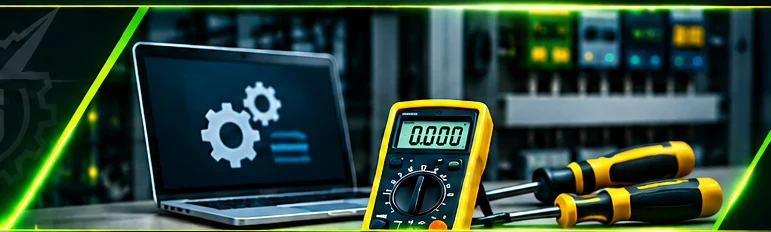
Cálculo e seleção de componentes para montagem de painéis elétricos.
Diagramas de entradas e saídas digitais e analógicas, válvulas e sensores RTD.
24 sensores e instrumentos com funcionamento e aplicações industriais.
Sinais industriais (4–20 mA, 0–10 V, % de escala) e valores de engenharia.
Pressão, coluna d’água, temperatura, vazão, elétrica e outras grandezas.
Conversão de resistência para temperatura e de temperatura para resistência.
Conversão de mV e temperatura para os tipos B, E, J, K, N, R, S e T, com compensação da junta de referência.
Lógicas Ladder: partida de motor, controle de nível, intertravamentos e temporizadores.
Cálculo de corrente, ampacidade e queda de tensão em um único utilitário.
Y = Ymín + (X − Xmín) / (Xmáx − Xmín) × (Ymáx − Ymín)
Conversão Hz ↔ RPM considera motor de 2 polos (RPM = Hz × 60).
Resistência → temperatura (Pt100, R₀ = 100 Ω a 0 °C).
R(T) = R₀·(1 + A·T + B·T²) para T ≥ 0 °C
Para T < 0 °C: + C·(T − 100)·T³
A = 3,9083×10⁻³ · B = −5,775×10⁻⁷ · C = −4,183×10⁻¹²
Equação conforme IEC 60751. Faixa de uso: −200 a 850 °C.
Informe 0 °C quando a medição já estiver compensada pelo instrumento ou quando usar uma junta de referência em banho de gelo. Caso contrário, informe a temperatura real dos terminais de referência.
Equente = Emedida + E(Treferência)
Faixas das funções de referência ITS-90; não representam necessariamente a faixa operacional contínua de qualquer sonda comercial. Consulte a classe de tolerância, o revestimento e os limites do fabricante.
No tipo B, a relação FEM-temperatura não é unívoca na região inferior a aproximadamente 250 °C; por isso, a conversão inversa é limitada à região em que há uma única solução.
Estimativa educativa. Verifique proteção e dimensionamento conforme normas e dados do fabricante.
ΔV = 2 · I · L · R / 1000
R em Ω/km (cobre, 20 °C)
Referência educativa (30 °C, 3 condutores carregados). Não substitui a NBR 5410, o método real de instalação, agrupamento, temperatura, queda de tensão e proteção. Confira os valores na norma antes de usar em projeto.
Entre em contato e sugira novos utilitários para a nossa plataforma.
Diagramas de referência para conexões de cartões de entradas e saídas, instrumentos e componentes de automação industrial.
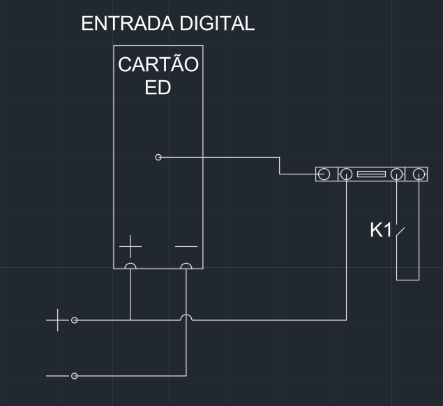
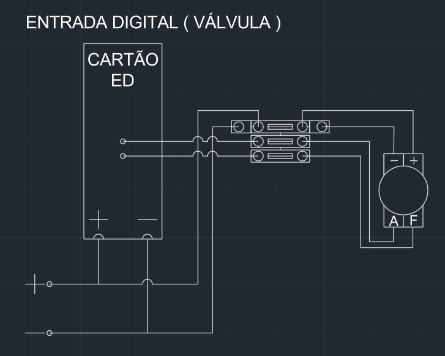
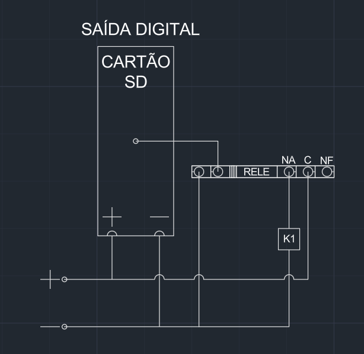
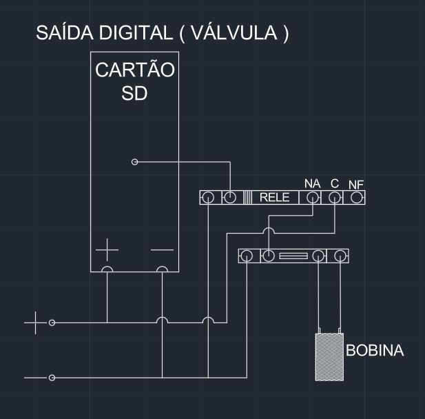
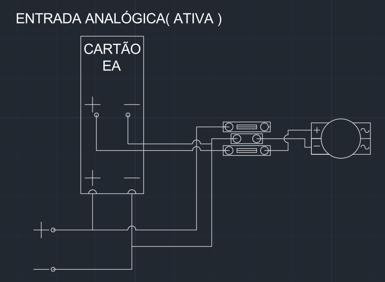
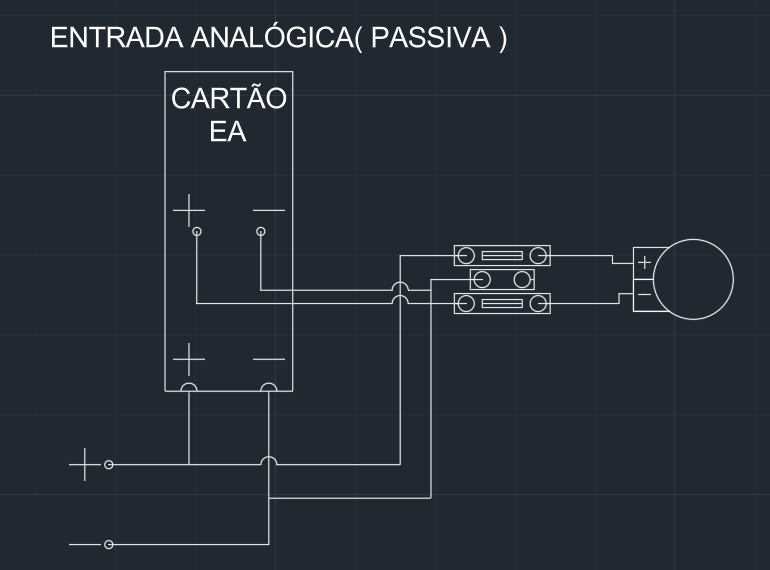
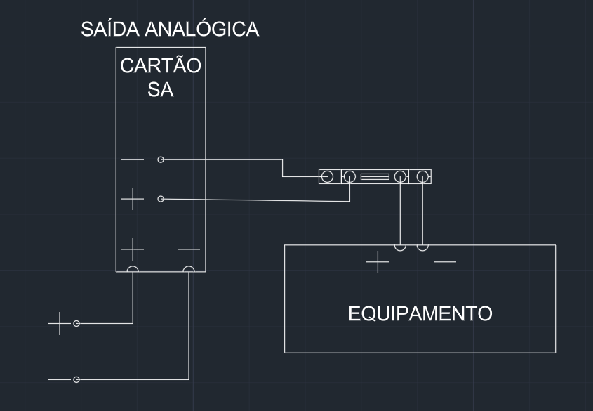
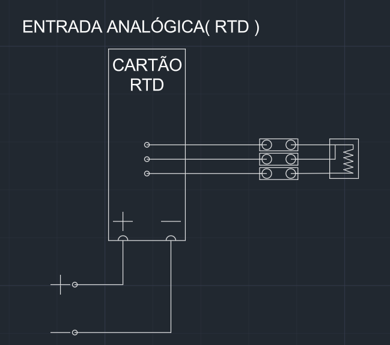
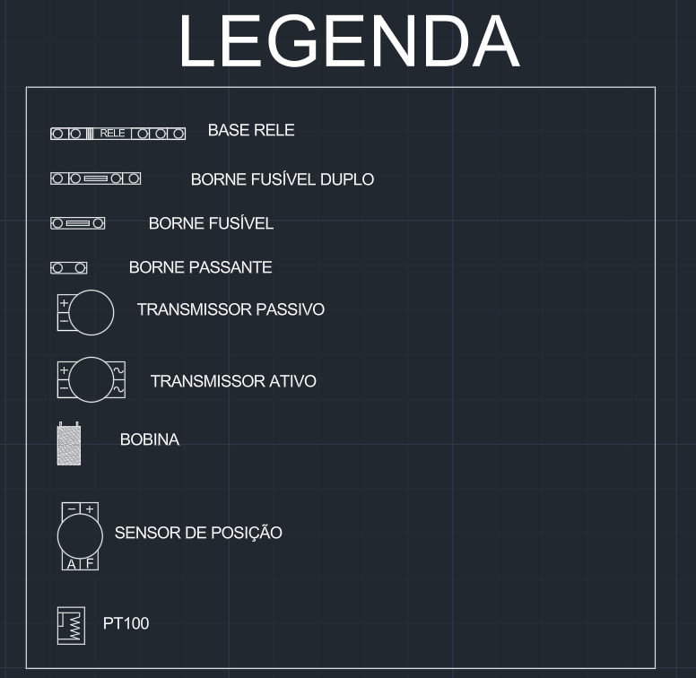
Conte um pouco sobre sua necessidade. As informações serão encaminhadas à equipe da LG Tech Automação para avaliação e retorno.
Preencha os cinco campos abaixo. Todos são obrigatórios.